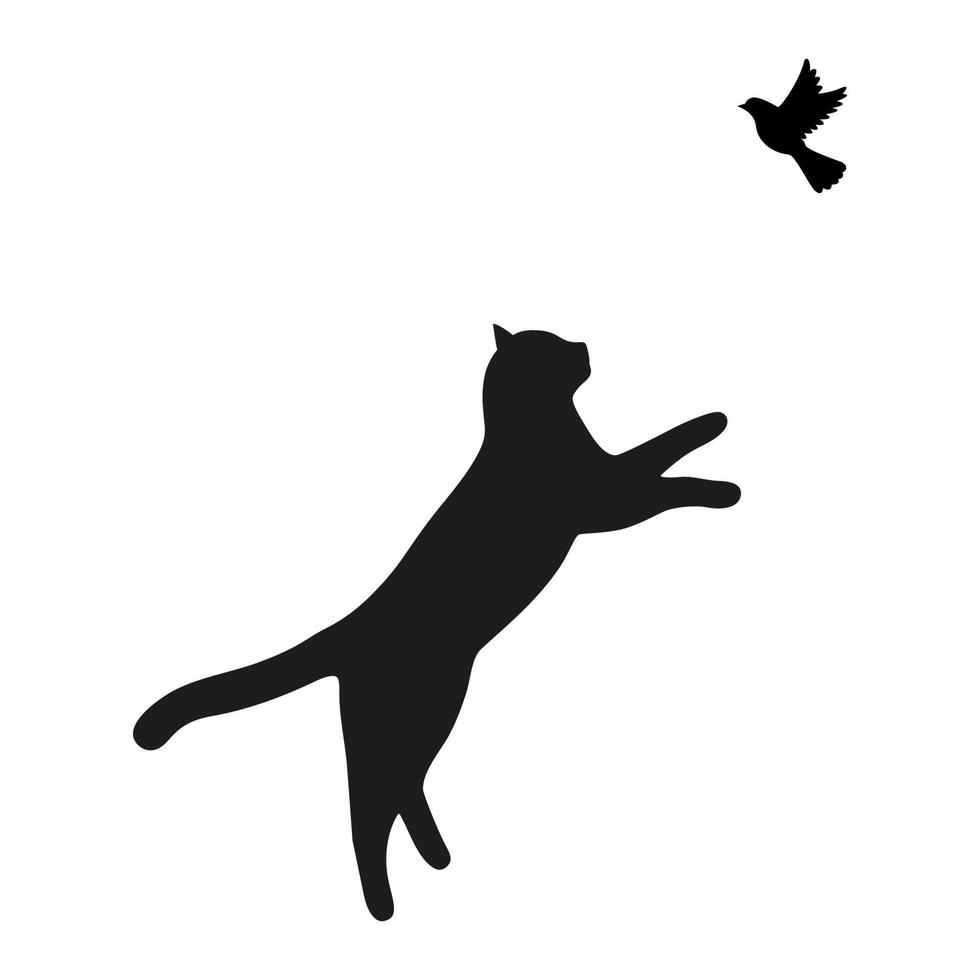

Habíamos señalado que la lectura es un proceso activo en que el lector da un significado al texto teniendo presente el contexto de este último como el suyo como lector. También se había comentado que hay diferentes niveles de profundidad en la lectura. Pues bien, la lectura crítica se refiere precisamente a leer desde distintos niveles de profundidad. Así por lo menos la define el el ICFES (2021) al señalar que la lectura crítica es la "capacidad para comprender el texto desde diferentes niveles (literal, inferencial y crítico)" (p.43)
Ahora bien, ¿de qué trata cada nivel? Veámoslo parcialmente siguiendo los aprotes del ICFES (2021). Parcialmente porque en lo sucesivo de este recurso se ampliará y se ejercitará cada nivel.
NIVEL DE LECTURA LITERAL
En este nivel (nivel uno por llamarle así) se identifica y entiende la información que aparece en un texto literalmente, es decir, tal como fue escrito. En este nivel, entonces, se puede responder qué significa una palabra según el contexto de la frase en que aparece escrita y también a cualquier información que aparezca escrita en el texto. (ICFES, 2021)
Mirémoslo con un ejemplo:
Si tenemos la siguiente frase:
"El gato se sentó en el alféizar de la ventana y observó atentamente los pájaros que revoloteaban en el jardín. De repente, saltó con agilidad y atrapó uno de ellos en el aire"
Y si nuestra lectura se enfoca en responder a preguntas del tipo: ¿Qué es alféizar? Elemento constructivo que corresponde a la parte baja de la ventana; ¿dónde se sentó el gato? En el alféizar dela ventana; ¿qué hizo el gato? Observó los pájaros y atrapó uno en el aire. Estaremos leyendo a nivel literal.

NIVEL DE LECTURA INFERENCIAL
En este nivel, (nivel dos que incluye el nivel anterior) además de entender qué significa una información específica dentro de un texto, se comprende cómo se articulan todas las partes del texto para darle un sentido completo al mismo. Esto lo realiza el lector no solo deduciendo el significado de un texto a partir de relacionar la información que aparece escrita en diferentes partes del texto, sino también a partir de relacionar la información del texto con los conocimientos previos que tenga el lector. (ICFES, 2021)
Predecir de qué va a tratar o cuál va a ser el final de un texto, construir una tesis, hipótesis o resumen de un texto, así como inferir que quiso decir implícitamente un autor en un texto son tareas del nivel de lectura inferencial.
Miremos el presente nivel con el ejemplo del anterior nivel:
"El gato se sentó en el alféizar de la ventana y observó atentamente los pájaros que revoloteaban en el jardín. De repente, saltó con agilidad y atrapó uno de ellos en el aire"
Si en el contexto de la anterior frase, en mi lectura infiero que el gato al atrapar a un pájaro en el aire estaba cazando, estaré realizando una lectura inferencial, pues estoy aludiendo a un elemento que no está escrito explícitamente en el texto, y, adicional a eso, dicha inferencia podría interpretarse como un resumen de todo lo descrito en la anterior frase.
NIVEL DE LECTURA CRÍTICO.
En este nivel, (nivel 3 que incluye el nivel 1 y nivel 2) además de construir un significado global de un texto, se reflexiona sobre él y se evalúa su contenido. En este nivel se identifica las estrategias retóricas o argumentativas de un autor, advirtiendo presupuestos e implicaciones que se derivan de ellas. Y, además se reflexiona en la intención comunicativa del autor teniendo presente el contexto en que se emitió un texto. (ICFES, 2021)
Miremos el presente nivel, nuevamente, con el ejemplo que venimos trabajando:
"El gato se sentó en el alféizar de la ventana y observó atentamente los pájaros que revoloteaban en el jardín. De repente, saltó con agilidad y atrapó uno de ellos en el aire"
Si en mi lectura analizo en esta frase que el autor utiliza una estrategia de suspenso para captar la atención del autor, y argumento que además tiene el propósito de describir la naturaleza de supervivencia porque reparo en que la frase pertenece a un cuento que lleva por título: "Así es la naturaleza", y en adición señalo implicaciones éticas que se derivan de presentar de ese modo la caza; estaré leyendo críticamente.
Aunque los niveles que supone la lectura crítica se presentan por separado y en lo sucesivo del recurso también se presentan de ese modo, debe tenerse en cuenta que ello se hace para tener claridad conceptual, sin embargo, en el proceso de lectura generalmente empleamos de manera simultánea los niveles antes mencionados, pues todos están interrelacionados jerárquicamente, siendo el nivel crítico el superior y el cual abarca al nivel inferencial y este último a su vez al literal.
Si imaginamos en términos de niveles numerados, los niveles de lectura podría representarse así:
{kind=link}